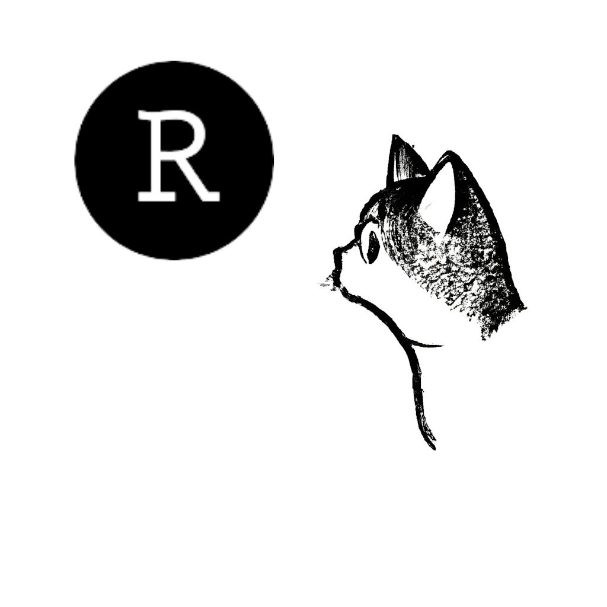

Hello!
My name is Isabella Velásquez. Keep in touch!
ivelasq3 | ivelasq | ivelasq | ivelasq.rbind.io
The agenda for today’s Meetup.

Before we dive into using Quarto, you may be wondering, why should I build a blog in the first place?